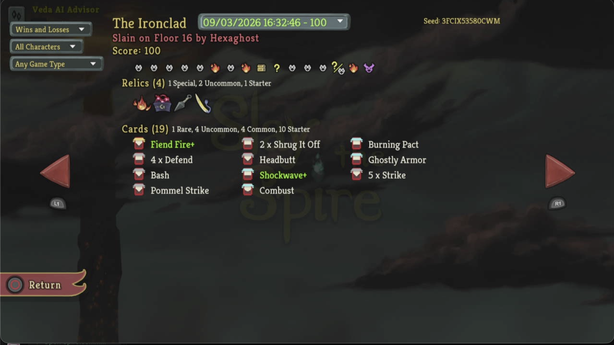
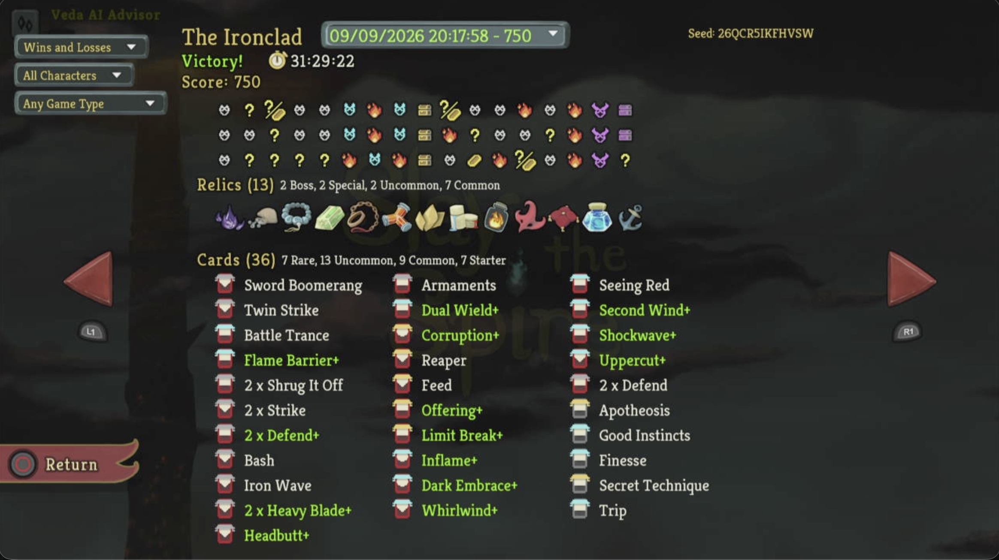
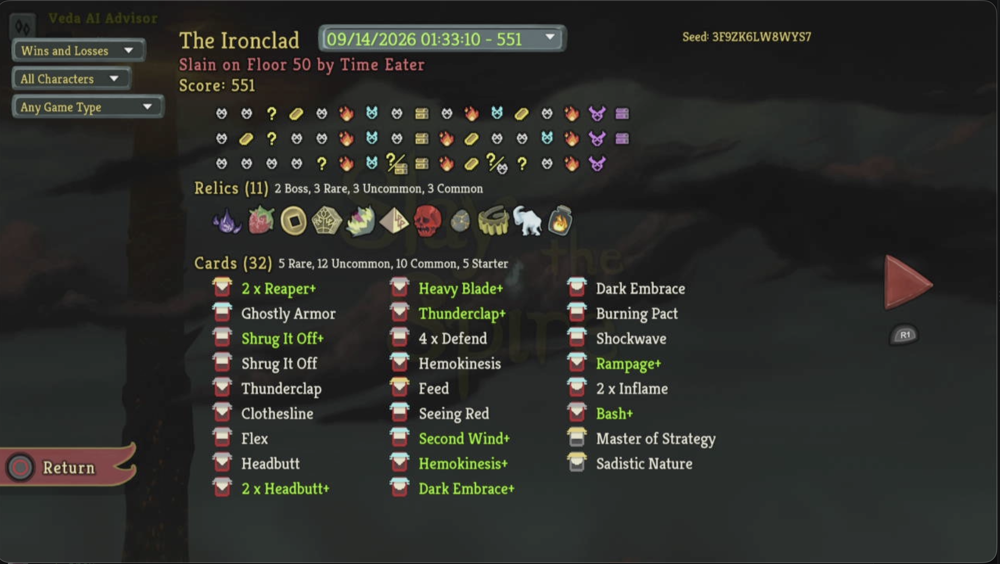
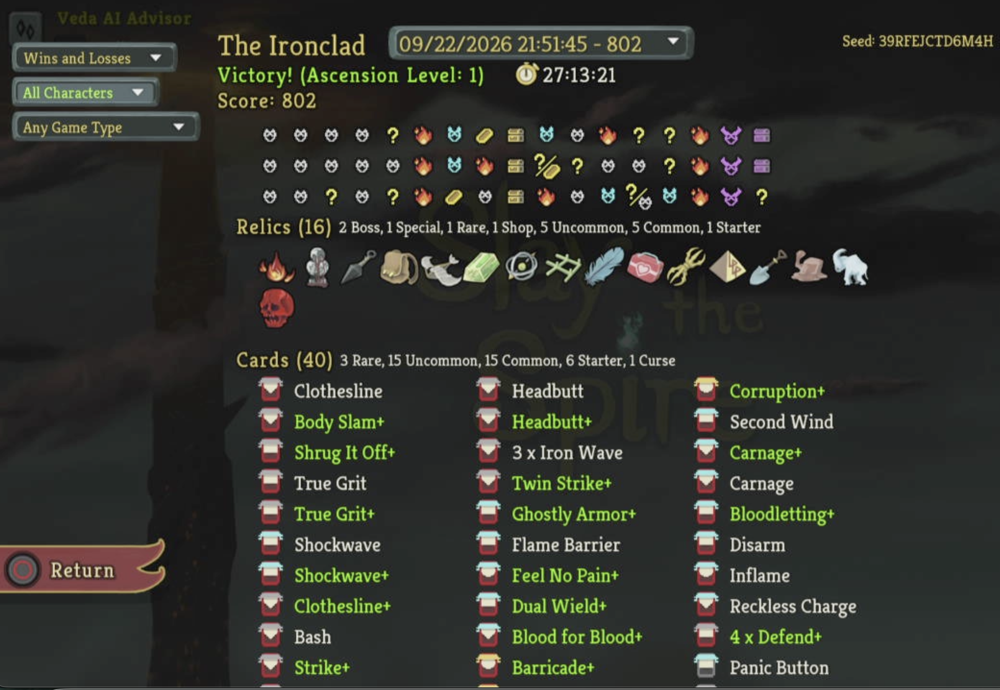
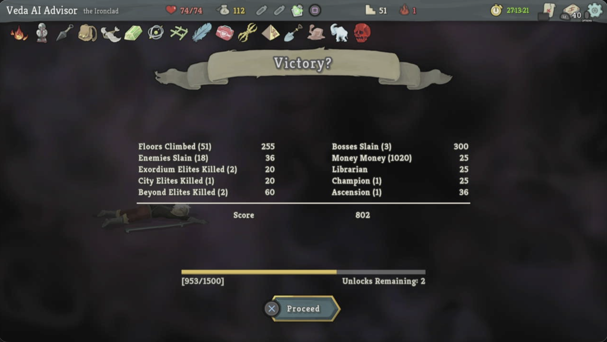
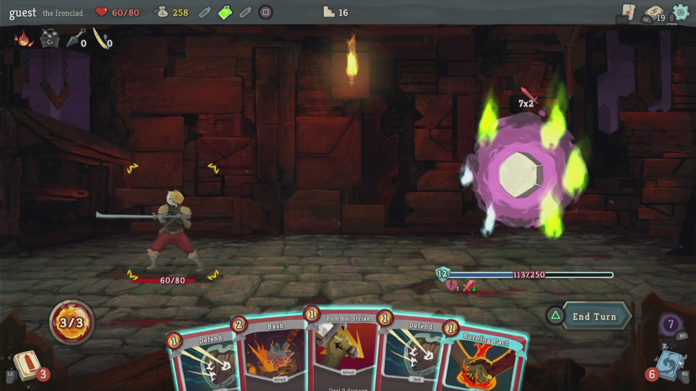

Every turn changes the state
Enemy intent, HP, Block, hand, draw order, potions, and relics create a new decision surface each turn.
VEDA · Game Advisor #1
A human-guided deck-building run that records observed decisions, resources, and outcomes. Spire advises; the player controls the game.
Why this game fits VEDA
Slay the Spire makes the advisor’s promises concrete: observe a changing state, reason over uncertainty, recommend one legal move, then remember the outcome.
Enemy intent, HP, Block, hand, draw order, potions, and relics create a new decision surface each turn.
Map branches force trade-offs among safety, elites, shops, rests, events, and the next boss.
Cards, relics, gold, upgrades, and lost HP shape every later fight and cannot be evaluated in isolation.
Predictions can be compared with the next screen, so a miss becomes a testable lesson instead of a hidden assumption.
Architecture
VEDA is the product philosophy; these three skills give the system distinct responsibilities. They cooperate through durable evidence, not through untracked conversation.
Purpose: observe Slay the Spire, reconstruct confirmed state, identify legal actions, and advise the player.
Intention: stay watch-only, fail closed when state is missing, and log every meaningful decision and outcome.
Purpose: curate the player-facing story, evidence, accessibility, trust, and franchise consistency.
Intention: keep verified milestones separate from guesses and recommend what belongs in the public report.
Purpose: implement approved telemetry, reports, architecture, and site changes.
Intention: preserve scope, test the change, and wait for explicit approval before publishing or changing an approved surface.
End-to-end: Spire observes → writes evidence → MIRA reviews the user-facing result → Builder implements an approved improvement → tests verify behavior and reviewed summaries update the report → Spire uses the verified capability on the next run.
Progress Report · updated September 22, 2026
A player progression and run-history view built from supplied statistics, verified floor evidence, and clearly marked gaps. When the ledger does not know, the page says so.
Character Statistics · earlier reference
Achievement Evidence
These values are an earlier in-game Overall Statistics reference and have not been refreshed after the latest victory. That screenshot is not present in the local archive, so no unrelated image is substituted as proof.
Run Archive




What I Learned
Gremlin Leader and Time Eater records show that exact enemy HP, Block, intent, status modifiers, and post-action HP must be checked before calling a line safe.
Displayed intent already includes visible damage modifiers. The calculator now avoids applying Vulnerable twice and checks each hit when modeling a changed attack.
In the Darklings combat, free Skills from Corruption supported repeated Block and focused attacks; manage the revive cycle before isolating one Darkling.
The Floor 50 review observed that cheap cards can worsen the 12-card threshold; keep turns compact and preserve a safe defensive line.
The Slime Boss record required a visible damage-and-split calculation; a non-damage intent did not remove the need to verify the next turn.
At Nemesis, Defend+ was chosen before the final Blood for Blood+ line because the next status effect was not confirmed.
After Snecko, the visible Entrench, Wild Strike, and Clothesline offers were skipped rather than diluting the existing plan.
Armaments+ was preferred at Nemesis because retaining cards makes future upgrade targets persist instead of disappearing at turn end.
The Dead Adventurer path was taken at 60/74 HP and won, but it ended at 28/74; a reward path must be weighed against boss-approach health.
At the Act 3 merchant, a full potion bar blocked a purchase until an owned potion was discarded; slot pressure is part of shop planning.
The Byrd encounter records maximum HP rising from 90 to 93; Burning Blood then restored HP after combat.
The Act 2 transition record showed why HP, potions, relics, and map assumptions must not be carried forward without a visible next-Act state.
VEDA promotes a strategy only after evidence, an implementation, and a regression test; missing decision records are not silently filled in.
Run History
Matching floor images are shown where available. Related gameplay and run overviews are labeled when an exact floor image is missing.
Showing all runs and available floor evidence.
Ironclad · Score 802 · three bosses defeated
Final resources: 74/74 HP · 112 gold · 40 cards · 16 relics · Fairy in a Bottle unused.
Result: 51 floors climbed and three bosses defeated. The ending is “Victory?”; no Heart combat victory is claimed.
Evidence: Player-confirmed boss defeat and final-results screenshots. The intermediate combat actions were not fully logged.

Score 802; 51 floors climbed, 18 enemies and three bosses slain. Final HP 74/74, gold 112.
Final-results screen verified; no Heart combat victory.
Boss defeated. Energy Potion and Blood Potion consumed; Fairy in a Bottle remained unused.
The final outcome is confirmed; intermediate turns are incomplete in the structured ledger.
Barricade upgraded to Barricade+; its energy cost changed from 3 to 2. HP 74/74.
Upgrade confirmed before the boss; combat-only upgrades are kept separate from the permanent deck.

Victory at 61/74 HP; 27 gold, Red Skull and Blood Potion collected.
Confirmed reward and outcome records; no invented card reward.
What I did: Logged the elite opening at 74/74 HP, 4 gold, and three potions.
What I accomplished: No closing state or reward is recorded.
What I learned: No info available.
What I did: Logged one resolved purchase sequence at 257 gold and 74/74 HP.
What I accomplished: Feel No Pain, True Grit, Fairy in a Bottle, and Strength Potion recorded; Liquid Bronze removed.
What I learned: Full potion slots can block a shop potion until a potion is manually discarded.
What I did: Logged 12 combat decisions, including Corruption, free defensive Skills, and focused attacks on the active Darkling.
What I accomplished: Darklings combat victory recorded; Headbutt+ acquired.
What I learned: Debuff the group, exploit Corruption’s free Skills, and avoid isolating a Darkling before the revive cycle is managed.
What I did: Chose “I Am War,” then recorded 16 decisions through the Mind Bloom Slime Boss fight and reward.
What I accomplished: Shovel, 50 gold, and Body Slam (upgrade not confirmed) were recorded; the combat victory was observed, but final HP was not closed.
What I learned: At 47 HP, the evidence-supported event choice favored the fight over adding two Normality curses; Body Slam (upgrade not confirmed) fit the block engine.
What I did: Logged six decisions around the visible 15-damage intent, Defend+ mitigation, Blood for Blood+, and the final lethal sequence.
What I accomplished: Nemesis elite victory, 20 gold, and Armaments+ recorded; HP ended at 47/74 in the resolved outcome.
What I learned: Defend before committing damage against an unread Nemesis status; Armaments+ was preferred because Runic Pyramid retains upgrade targets.
What I did: Logged 14 decisions through the three-Darklings fight and reward choice.
What I accomplished: Combat victory at 46/74 HP; 20 gold, Power Potion, and Shockwave+ recorded.
What I learned: Shockwave+ was selected for immediate multi-enemy safety; a strength payoff was not confirmed, so Spot Weakness+ stayed unchosen.
What I did: Inspected the visible relic options and logged two decisions rather than guessing at unread effects.
What I accomplished: Act 3 boundary at 74/74 HP; Runic Pyramid selection was player-confirmed.
What I learned: Unread relic text must be inspected before comparing options; unknown effects stay unknown.
What I did: Defeated the Act 2 boss after 28 logged decisions, then confirmed the next Act boundary.
What I accomplished: Entered Act 3 at 74/74 HP; Corruption, Liquid Bronze, and Runic Pyramid recorded.
What I learned: Keep the retained-hand plan explicit when choosing a boss relic; the final relic choice was confirmed as Runic Pyramid.
What I did: Logged 10 resolved combat decisions, including Weak, Shrug It Off+, and the final damage line against Mystic.
What I accomplished: Multi-enemy victory at 45/74 HP; 52 gold, Strength Potion, and Shockwave recorded.
What I learned: Apply Weak and use block deliberately against the active attacker; Feed lethality still requires exact displayed HP.
What I did: Logged 12 decisions and finished the lethal sequence with Blood for Blood, Headbutt, and Strike before the final Blood for Blood hit.
What I accomplished: Snake Plant defeated; HP 54/74 → 51/74 after Burning Blood, 14 gold recorded, card reward unopened.
What I learned: Malleable and the 7×3 intent require a damage-versus-block calculation; a zero-cost Blood for Blood closed the final 4 HP.
What I did: Chose Simplicity from the two visible Ancient Writing options.
What I accomplished: All Strikes and Defends upgraded; HP remained 54/74.
What I learned: No decision record was written for this event; the outcome is confirmed but the rationale is not.
What I did: Entered the shop at 513 gold and 35/74 HP; inventory events record Vajra, Medical Kit, Barricade, Blood Potion, and a card-form Barricade.
What I accomplished: The final purchase order and exact shop screen are not fully recorded.
What I learned: Shop telemetry must distinguish relic/card names and record each purchase or removal as it occurs.
What I did: Opened the treasure room from the visible map state.
What I accomplished: Eternal Feather acquired; HP 35/74 and gold 513 recorded.
What I learned: No decision record was written for the chest; contents are confirmed only by the persisted ending state.
What I did: Used the rest site after the Triple Slavers fight.
What I accomplished: Healed from 13/74 to 35/74 HP; gold 438.
What I learned: No decision record was written, but the persisted state confirms healing rather than an upgrade.
What I did: Completed the elite record and reached the reward state.
What I accomplished: Finished at 13/74 HP; Pantograph, 28 gold, and an unopened card reward recorded.
What I learned: The accompanying retrospective warns against lethal claims without exact enemy HP, Block, intent, and post-action HP.
What I did: Used the rest site after the Snecko combat.
What I accomplished: Healed from 33/74 to 55/74 HP; gold 403. Liquid Bronze removal is recorded, but its reason is not.
What I learned: Resource changes need an explicit reason alongside the item event.
What I did: Logged five resolved decisions through the Snecko fight, reward, and card skip.
What I accomplished: Snecko defeated; 14 gold collected, card reward skipped, and Burning Blood restored HP to 33/74.
What I learned: When the actual card offers were visible, the reward was skipped rather than adding Entrench, Wild Strike, or a redundant Clothesline.
What I did: Opened mid-combat at 30/74 HP with Shelled Parasite at 14/72 HP and 6 Block; three decisions were logged.
What I accomplished: Combat outcome is marked victory; 13 gold, Fear Potion, and card offers Disarm, Combust, and Second Wind were observed, but the floor close is absent.
What I learned: Mid-combat starts must stay partial until the earlier turn sequence and closing state are captured.
What I did: Logged the opening hand, energy 3, Mystic at 20 HP/40 Block, Spheric Guardian at 39 HP, and six decisions.
What I accomplished: No closing state is recorded; Bloodletting+ and Liquid Bronze were acquired and Duplication Potion was consumed.
What I learned: Do not promote a combat outcome when the closing state is absent; the zone-sensitive sequence remains unverified.
What I did: Logged 12 decisions across the connected route and elite combat; the visible continuation was chosen after weighing the shop path.
What I accomplished: Three Slavers defeated; HP 70/74 → 65/74, 30 Gold Stolen Back plus 18 gold, Duplication Potion, and Armaments+ recorded.
What I learned: Stop and reassess after Offering or a new draw; the priority target and the remaining block line must be explicit.
What I did: Reached the Act 2 chest at 13/74 HP and 342 gold before opening it.
What I accomplished: No info available; chest contents and subsequent choice were not recorded.
What I learned: A safe-boundary screenshot without the opened chest cannot establish a reward.
What I did: Logged three recommended combat lines against the 140-HP Slime Boss, including the split-threshold damage line.
What I accomplished: Boss defeated at 13/74 HP; Offering, Liquid Bronze, and the boss-relic options were recorded, with the final relic choice unresolved in this floor record.
What I learned: A visible non-damage intent does not remove the need to verify the next turn before committing to a split-race line.
What I did: Used the rest site before the Act 1 boss.
What I accomplished: HP recorded at 50/74 with 216 gold; boss next confirmed.
What I learned: The safe pre-boss boundary is confirmed, but no decision rationale was recorded.
What I did: Chose Forge at the Ominous Forge and upgraded Shrug It Off.
What I accomplished: Shrug It Off upgraded; no curse added and gold stayed at 216.
What I learned: At 28/74 HP, the resolved record favors a known defensive upgrade over an unknown relic plus Pain.
What I did: Searched the Dead Adventurer event, continued after the first reward, and logged 11 decisions through the sleeping elite fight.
What I accomplished: Elite victory; HP 60/74 → 28/74, Orichalcum and Shrug It Off acquired, gold 153 → 216.
What I learned: A calculated event risk can be acceptable at 60/74 HP, but the extra fight materially reduced the run’s health buffer.
What I did: Reached the rest-site boundary with 153 gold and Blessing of the Forge visible.
What I accomplished: The persisted screen shows 60/74 HP; the floor summary records a completed rest.
What I learned: No decision record was written for the rest, so the choice cannot be reconstructed beyond the observed state.
What I did: Logged six recommendations, including visible Defend/Iron Wave/Strike lines and a discard check before Headbutt.
What I accomplished: Combat victory; HP 36/74 → 38/74, gold 138 → 153, and Inflame acquired.
What I learned: Headbutt targets must come from confirmed discard choices; the final Inflame reward was player-confirmed.
09/14/2026 · Ironclad · Score 551
What I did: Reached the Act 3 boss.
What I accomplished: 11 relics and 32 cards are shown in the supplied run history screenshot.
What I learned: The final retrospective requires a verified nonlethal block line against Vulnerable multi-hit damage; lesson remains proposed.
What I did: Entered the final boss fight at 69 HP and ended at 0 HP.
What I accomplished: No victory; the run ended at Time Eater.
What I learned: Verify multi-hit damage after Vulnerable and preserve a sufficient Block line before ending the prior turn.
What I did: Fled with Smoke Bomb at 12/99 HP.
What I accomplished: Preserved the run; elite rewards were forfeited.
What I learned: No info available.
09/09/2026 · Ironclad · Score 750
September 9, 2026 · Ironclad · 13 relics · 36 cards.
This supplied run-history result is separate from the September 22 Ascension 1 victory.
09/03/2026 · Ironclad · Score 100
What I did: Reached the Act 1 boss.
What I accomplished: Score 100; four relics and 19 cards are shown in the supplied run history screenshot.
What I learned: No info available.

What I did: Entered the Act 1 boss fight.
What I accomplished: No victory; the run ended on Floor 16.
What I learned: No info available.
No matching run or floor records. No info available for this filter combination.
{kind=link}
{kind=link}
{kind=link}
{kind=link}
{kind=link}
{kind=link}